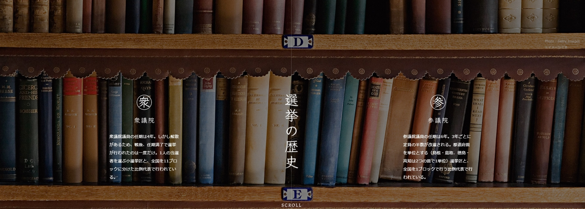
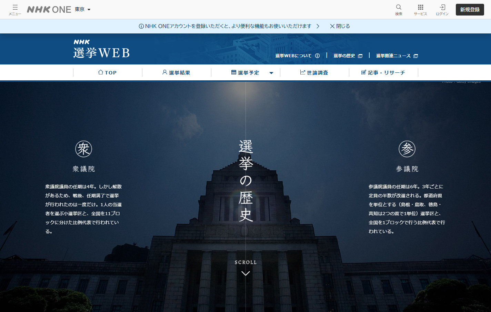
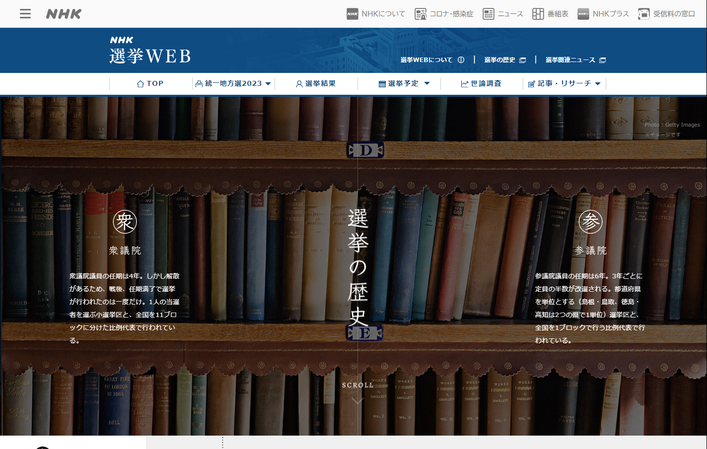
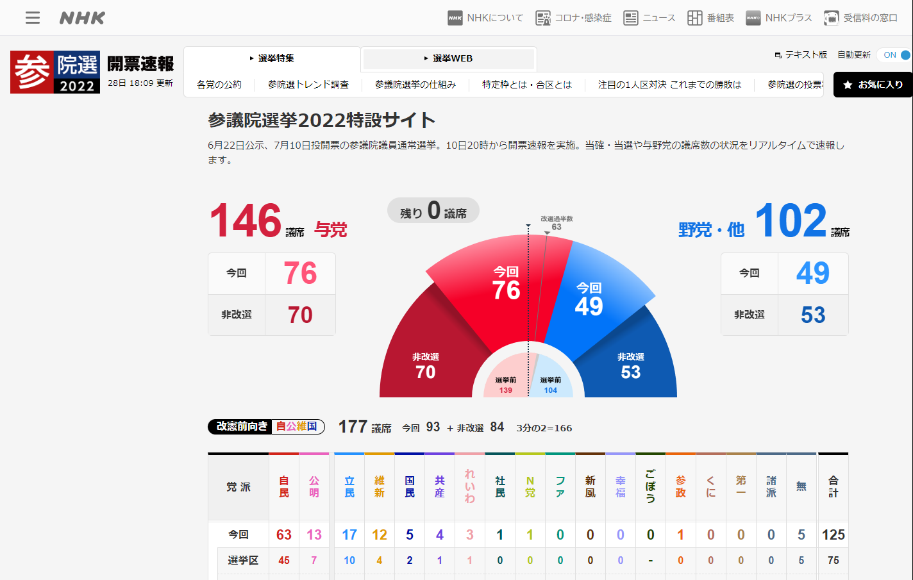

日本放送協会
衆議院・参議院 選挙の歴史
2018
概要
NHKニュースWEB内の「NHK選挙WEB」が運営する、国政選挙のデータベースコンテンツ「衆議院・参議院 選挙の歴史」。平成以降の衆議院選挙・参議院選挙の結果を選挙ごとにまとめ、選挙の歴史を振り返れるアーカイブページです。
シンタケダは、コンテンツの企画・ウェブディレクションを担当しました。
取り組み過去の選挙データを分かりやすく振り返れるよう、ページ構成・情報設計を担当しました。


